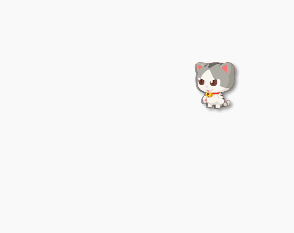

键盘¶
概览¶
| 属性值 | 描述 | 例子 |
|---|---|---|
| pressed | 某个键是否被按下中 | Key['a'].pressed |
| 键盘事件 | 描述 | 例子 |
|---|---|---|
| press | 当键盘上某个键被按下时触发 | Key['a'].press |
| down | 当按键被按下时触发 | Key['a'].down |
| up | 当按键松开时触发 | Key['a'].up |
键盘状态¶
当键盘上a键被按下时，以下属性值会变为true，当a键松开时，以下属性值又变为false值。在进行条件判断时，可以利用这一特性进行判断。
Key['a'].pressed // true/false
例子：用键盘控制圆圈出现并变大
function draw(){
canvas.clear();
if(Key.a.pressed){
circle(100, 100, 50);
}
}
run(draw);
键盘事件¶
和鼠标类似，键盘也会触发事件。
down：当按键被按下时触发up：当按键松开时触发press：当按键被按下并且松开时触发
方法一：
Key.a.press = function(){
console.log('a')
};
方法二：
Key['a'].press = function(){
console.log('a')
};
当定义了以上方法后，只要我们按下a键，就会在控制台输出a字。
Key是一个对象，因此以上两种方式都可以实现对按键a的监听。
按键键名¶
| 按键 | 键名 |
|---|---|
| a ~ z | a ~ z |
| 0 ~ 9 | 0 ~ 9 |
| !@#$%^&*()_+-=,./<>?|\;:\'" | !@#$%^&*()_+-=,./<>?|\;:\'" |
特殊键名称¶
| 按键 | 名称 | 备注 |
|---|---|---|
↑ |
ArrowUp | 无press事件 |
↓ |
ArrowDown | 无press事件 |
← |
ArrowLeft | 无press事件 |
→ |
ArrowRight | 无press事件 |
Esc |
Escape | |
空格 |
Space | |
回车键 |
Enter |
状态还是事件¶
当我们需要用键盘来控制项目时，有上述两种方式，那什么时候用状态判断的方式，什么时候用事件的方式呢？
正如这两个方式的名称，当我们需要表达状态变化时，我们选择使用状态，比如，控制一个角色的移动，我们希望当左键按下的时候（状态），角色往左移动，这就是一个状态的切换，从静止到往左移动，那么这里就适合用状态来进行判断。
例子：使用状态来移动
var cat = new Sprite("https://r.leaplearner.com/i/Cat.png", 100, 100, 50, 60);
function draw(){
canvas.clear();
if(Key.ArrowLeft.pressed){
cat.x --;
}
cat.draw();
}
run(draw);
可以看到，当按下左键时，小猫变为移动状态，匀速的往左边移动。

例子：使用事件来移动
如果我们只是想让角色移动一格，那么这就是一个事件，因为移动结束后角色恢复到了静止的状态，这里就是用是用事件的方式来控制。当然，我们还可以通过事件来控制状态的变化。
var cat = new Sprite("https://r.leaplearner.com/i/Cat.png", 200, 100, 50, 60);
function draw(){
canvas.clear();
cat.draw();
}
Key.ArrowLeft.press = function(){
cat.x -= 10;
};
run(draw);
手势事件¶
另外，手机上的键盘需要触发输入才能够显示，因此我们也要避免使用键盘输入。
leapjs包含了对手势的基本支持功能，在手机上，支持4个简单的滑动手势，上下左右，分别对应键盘的上下左右键。使用了这些按键的程序，在手机上可以使用滑动手势来控制。
var rect = new Rectangle(30, 30, 100, 100);
Key.ArrowLeft.down = function(){ rect.x -= 10;};
Key.ArrowRight.down = function(){ rect.x += 10;};
Key.ArrowUp.down = function(){ rect.y -= 10;};
Key.ArrowDown.down = function(){ rect.y += 10;};
function main(){
canvas.clear();
rect.draw();
}
run(main)
在这个例子中，我们可以使用键盘的方向键来移动矩形的位置，也可以在手机上用移动手势来控制。
支持的手势事件
注意，只有例子中的4个按键支持手势转换，且只支持down事件